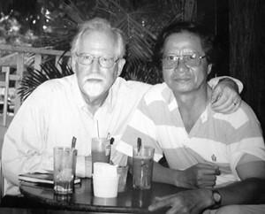
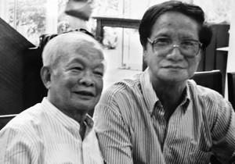

Có điều tôi băn khoăn một chút, nuối tiếc một chút là hình như, hình như thôi, bốn ông anh này lẽ ra hay hơn, để đời hơn, vang dội hơn, nếu không phải đội mũ kim cô mấy chục năm, à không, gần như suốt cuộc đời mỗi người.
☆
Nếu không phải đội cái mũ chết tiệt ấy thì bốn ông này chẳng kém cạnh gì so với bốn vì sao trên văn đàn Việt Nam nửa đầu thế kỷ hai mươi: Nguyễn Công Hoan, Vũ Trọng Phụng, Nam Cao, Ngô Tất Tố...
☆
Không hiểu sao tôi có mối cảm tình thân quí với các nhà văn quân đội. Tôi được biết anh Nguyên Ngọc khi cùng ở chiến trường khu 5; không, đúng hơn là khi đọc “Rừng Xà Nu” của anh hồi còn ngồi trên ghế nhà trường. Thời anh làm Tổng biên tập, tờ Văn Nghệ đã tập hợp, khơi dậy một luồng sinh khí mới mẻ hiếm thấy trên văn đàn. Anh là đệ tử, đúng hơn là tín đồ của Phan Chu Trinh. Anh có nhiều tâm huyết với những bước đi, những quyết sách của xã hội.
Có lẽ Nguyên Ngọc xem hầu hết những phim tôi làm và anh luôn động viên tôi. Cái tập “Nếu Đi Hết Biển” tôi làm ở Mỹ sau đưa in rồi tái bản, như đã kể ở trên, cũng là do anh “xúi giục”.
☆
...Anh Nguyên Ngọc quan tâm đến chữ nghĩa của tôi trong việc viết lách như vậy thật là một vinh hạnh lớn cho tôi. Xin thú thực tôi chưa bao giờ viết để lấy nhuận bút. Tôi viết rất ít và chủ yếu là viết kịch bản, lời bình, và một số bài. Thầy tôi, ông Roman Karmen là người có bút lực phi thường, có lẽ bởi cha ông là một nhà văn, muốn con mình đi theo văn nghiệp cho nên mới có tên Roman (trong tiếng Nga có nghĩa là tiểu thuyết). Roman Karmen là người tự viết kịch bản, tự quay cho đến khi về già. Ông là đạo diễn, người viết lời bình. Ông lại có một chất giọng lí tưởng để tự đọc lời bình. Một ông thầy, một tấm gương lớn như vậy khích lệ tôi rất nhiều. Ở Việt Nam, tôi thấy nhiều người làm phim tài liệu phải nhờ người khác viết lời bình, điều này cũng bình thường thôi nhưng hơi lạ với tôi. Lạ vì tôi nghĩ không ai cảm nhận, không ai thấu hiểu sâu sắc cái hồn vía câu chuyện bằng chính anh (trừ phi... tác phẩm của anh sáo rỗng, chẳng có “hồn vía” gì cả). Anh phải viết. Chính vì thế đôi khi người ta gọi phim tài liệu là phim tác giả. Nhưng không viết được, người khác viết hay hơn thì đành làm vậy thôi.
Lời bình phim “Những Người Dân Quê Tôi”, “Nơi Chúng Tôi Đã Sống”, “Phản Bội”, “Hà Nội Trong Mắt Ai”, “Chuyện Tử Tế”, “Có Một Làng Quê”, “Một Cõi Tâm Linh”, “Thầy Mù Xem Voi”, “Người Man Di Hiện Đại”...Tôi viết khá dễ dàng với cảm hứng dạt dào cùng sự tham góp của bạn bè. Tôi có thói quen khi làm phim, nghĩ cái gì, viết cái gì, quay cái gì đều bày hết lên mặt bàn để đồng nghiệp góp ý thêm bớt.
“Hà Nội Trong Mắt Ai”, “Chuyện Tử Tế”, được nhiều người quan tâm phần lớn là do lời bình. Tất nhiên phim tài liệu hiện đại bây giờ người ta không lắm lời như thế, nhưng tôi trót thuộc “thế hệ lắm lời”, đề-mốt-đê lắm rồi. Anh Nguyên Ngọc khen thì cám ơn anh, nhưng các bạn trẻ đừng theo vết mòn của chúng tôi. Lời càng ít, nhạc càng ít thì phim càng thật. Chưa có một bộ phim nào được khen là hay nếu nó không thật.
Nhân bàn về chữ nghĩa trong phim tài liệu, cho phép tôi được kể thêm rằng, cách đây dăm năm, anh Eric Henry, chủ nhiệm Khoa tiếng Việt và tiếng Trung ở Đại học North Carolina đã gửi cho tôi tập bản thảo cuốn sách do anh và một người Việt, anh Vũ Hân biên soạn để dạy tiếng Việt tại Mỹ. Eric Henry vốn là một cựu binh Mỹ đã học tiếng Việt từ năm 1969 ở Trung tâm Đào tạo Lục quân Texas. Năm 1970 anh sang Việt Nam với tư cách thông dịch viên, sau đó anh học thêm tiếng Trung.
☆

Eric Henry, chủ nhiệm Khoa tiếng Việt và tiếng Trung ở Đại học North Carolina
Trong tập tài liệu này các anh đã chép lại chính xác nguyên văn lời bình “Chuyện Tử Tế” và phần chính, quan trọng là các anh đã dẫn ra theo trình tự của phim các từ ngữ mà các anh cho là đắt giá, hàm súc, đa nghĩa, có tính ẩn dụ. Các anh giải thích các từ, các câu ấy bằng tiếng Anh và dẫn ra các thí dụ về hiệu quả khi dùng những từ ngữ ấy và nêu ra các câu hỏi về văn cảnh để sinh viên Mỹ thảo luận. Một số tờ báo ở nước ngoài đã in nguyên văn toàn bộ lời bình của “Chuyện Tử Tế”. Tôi cũng không ngờ lời bình của một bộ phim tài liệu mà được mọi người quan tâm như thế. Từng từ ngữ được đem ra mổ xẻ, được nâng lên đặt xuống. Nó được dịch ra mấy thứ tiếng Đức, Anh, Pháp, Nhật. Những dịch giả này đều là những nhà ngôn ngữ uyên thâm về tiếng Việt, họ cảm nhận nổi cái hồn vía của tiếng Việt, điều này thể hiện rõ nhất trong bản dịch tiếng Pháp và tiếng Anh.
☆
Tôi có thói quen e ngại khi người ta nói tốt về mình hơn điều mình có. Nó lại trở thành món nợ khi người ta tin mình quí mình.
☆
Nhà văn Lê Lựu trước kia ở gần nhà tôi Lý Nam Đế - Phan Đình Phùng - Hàng Bún. Anh có cái duyên chân quê mà không mấy ai có được. Trong hoàn cảnh văn chương bị o ép mà viết được “Thời Xa Vắng” hay đến thế phải là người tài và tâm huyết lắm, bản lĩnh lắm. Tôi học được ở anh nhiều điều, cách ứng xử và cả cách dùng chữ nghĩa trong văn chương của anh để tôi viết kịch bản, viết lời bình và viết những thứ khác.
Với Nguyễn Khải thì tôi rất chịu bút lực của anh. Hình như trong hơi hướng văn chương Nguyễn Khải có hồn vía của một linh mục, một triết gia, nhất là trong những tiểu luận tâm huyết cuối đời của anh như Nghĩ Muộn và Đi Tìm Cái Tôi Đã Mất . Có lần chuyện trò với anh, tôi tự thú: “ Trong ‘Chuyện Tử Tế’ tôi đã đạo văn của anh, cái đoạn cuối phim, trên hình, lúc người dân lam lũ chen chúc trong bụi bậm phố xá, trước trường đoạn nói về ông giáo dạy toán giỏi, vì mưu sinh mà phải đi bán rau, tôi bê nguyên xi một đoạn của ‘linh mục’ Nguyễn Khải: ‘Con người là một sinh vật không bao giờ chịu sống thúc thủ. Nó luôn luôn muốn vươn tới cái tuyệt vời, cái vô biên, cái vĩnh cửu là những cái con người không bao giờ đạt tới’ .”
Tôi được biết và quí trọng Nguyễn Minh Châu từ thuở hàn vi ở ngôi nhà ọp ẹp, khu tập thể quân đội phố Ông Ích Khiêm. Một con người hiền hòa, đằm thắm, có lòng với đời, xót xa canh cánh với từng giọt nắng hạt mưa, với những bộn bề ngang trái của cuộc đời. Một con người tha thiết với đời đến phút chót của mình. Hãy đọc “Lời Ai Điếu” của anh; hãy đọc những bút tích, di cảo anh để lại. Chị Doanh, người vợ hiền thảo của anh đã gom góp cho tôi được đọc. Đọc xong tôi thương anh hơn. Những ngày cuối đời anh trị bệnh trong chùa Pháp Hoa ở Đồng Nai, tôi vào thăm, chẳng ngờ chuyện ấy anh cũng viết lại trong một bức thư gửi bạn, anh Nguyễn Trung Thu ở Ban Văn hóa Văn nghệ.
☆
(Trong “Di cảo” trang 472 NXB Hà Nội 2009, Nguyễn Minh Châu viết: “... Chiều qua Thủy (‘Hà Nội Trong Mắt Ai’) vừa đến thăm tôi có kéo theo một ông Thiếu tướng (Hiệu trưởng Trường Lục Quân 2) ở cách tôi 8km với mục đích: ‘Ông này đọc anh nhiều và rất yêu anh – Có gì cần anh cứ gọi nhờ ông ấy’ – Thủy nói. Tôi đã thấy ông này chắp tay lạy Thủy như lạy một vị thánh: ‘Anh can đảm lắm, dũng cảm lắm, tôi kính phục anh’ lúc tôi tiễn cả hai ra hai chiếc xe đỗ ngoài cổng chùa. Và ba người chúng tôi đi mỗi người mỗi ngả ...”)
☆
Thủy nói:
- Có thể ai đó đọc những dòng này nghĩ rằng câu chuyện lạc đề, vô lý khi kéo mấy ông nhà văn quân đội vào để làm sang cho câu chuyện .
Tôi bảo Thủy:
- Không phải thế. Chúng ta không thể chui ra từ gốc chuối được, phải nhớ những người thầy của mình trong cuộc đời chứ. Các cụ bảo: Học thầy một vạn không bằng học bạn một ly; có những người vừa là thầy vừa là bạn thì may mắn lắm, chỉ sợ mình nghe mà không hiểu, nhìn mà không thấy thôi.
Tôi có nhiều người thầy như thế. Nếu ông trời cho khỏe mạnh tôi sẽ kể về những ông thầy đó. Bốn nhà văn quân đội này là thầy tôi, bạn tôi. Tôi học được ở các anh nhiều điều lắm. Nếu tôi không học thì làm sao tiếp tục làm nghề được. Thầy tôi, ông Roman Karmen có sống lại thì cũng không hiểu đất nước chúng ta, đồng bào chúng ta bây giờ muốn gì, cần gì, như những nhà văn Việt Nam giàu nhân cách, giàu trí tuệ...
☆
Có điều tôi băn khoăn một chút, nuối tiếc một chút là hình như, hình như thôi, bốn ông anh này lẽ ra hay hơn, để đời hơn, vang dội hơn, nếu không phải đội mũ kim cô mấy chục năm, à không, gần như suốt cuộc đời mỗi người. Nếu không phải đội cái mũ chết tiệt ấy thì bốn ông này chẳng kém cạnh gì so với bốn vì sao trên Văn đàn Việt Nam nửa đầu thế kỷ hai mươi: Nguyễn Công Hoan, Vũ Trọng Phụng, Nam Cao, Ngô Tất Tố, những nhà văn, những CON NGƯỜI dành cả cuộc đời mình đau đáu tăm tia vào những góc khuất, những ngang trái của cuộc đời này.

Với nhà văn Nguyên Ngọc – tại Hội Thảo Văn học Việt - Mỹ.